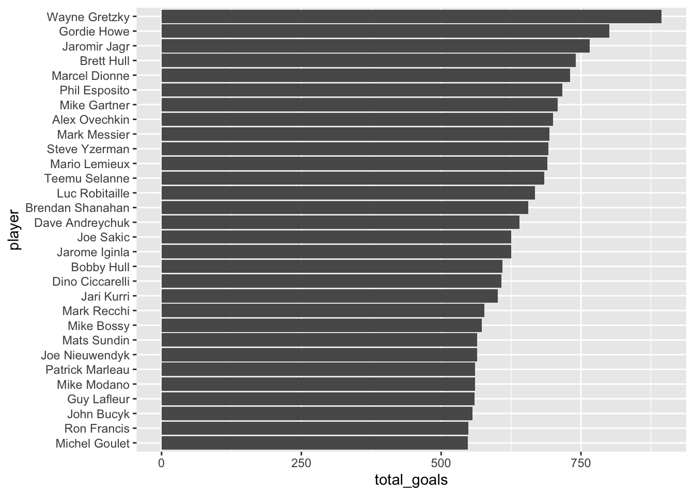
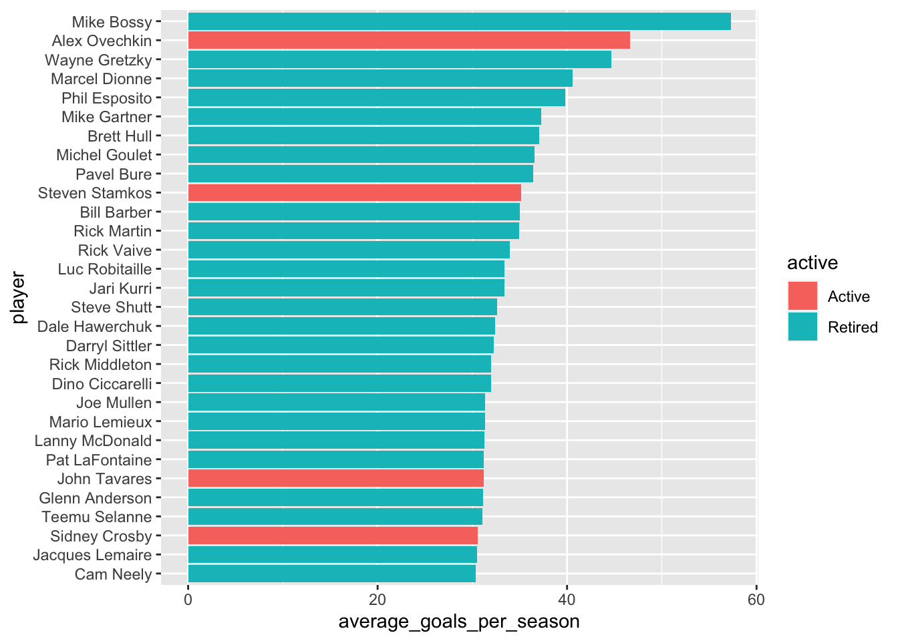
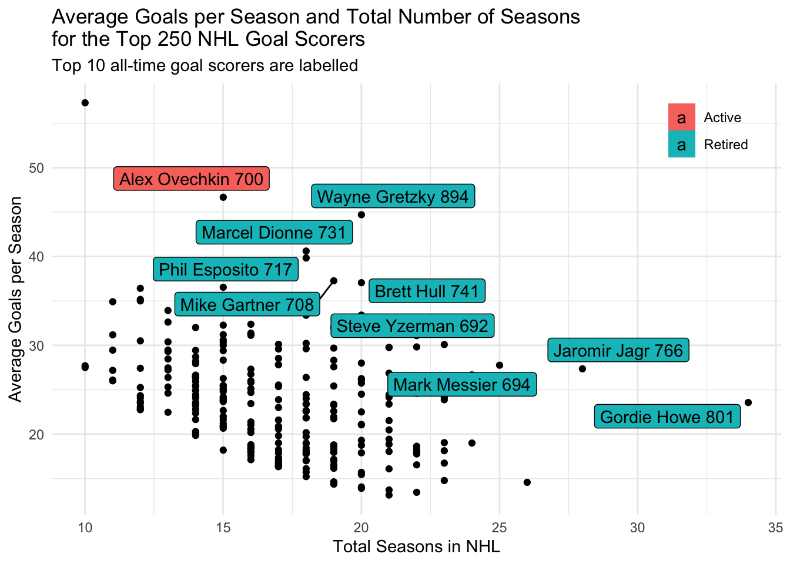
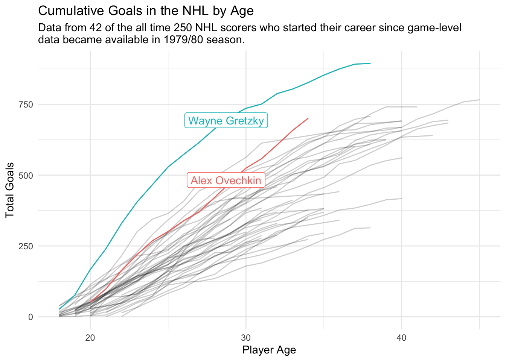

# install.packages("remotes")
remotes::install_github("thebioengineer/tidytuesdayR")First install the Tidy Tuesday R package.
The data for this Tuesday can be downloaded using tt_load.
tuesdata <- tidytuesdayR::tt_load('2020-03-03')
Downloading file 1 of 3: `game_goals.csv`
Downloading file 2 of 3: `season_goals.csv`
Downloading file 3 of 3: `top_250.csv`Unfortunately this only grabbed one file - the top 250 goalscorers. First look at this file.
Top Career Goalscorers
tuesdata$top_250 %>%
top_n(30, wt = total_goals) %>%
mutate(player = forcats::fct_reorder(player, total_goals)) %>%
ggplot(aes(x = player, y = total_goals)) +
geom_col() +
coord_flip() 
Average goals per season
parse_end_year <- function(years) {
end_tens <- substr(years, 6, 7)
possible_end <- as.numeric(paste0(substr(years, 1, 2), end_tens))
start <- as.numeric(substr(years, 1, 4))
if (possible_end - start > 0) {
possible_end
} else {
as.numeric(paste0(20, end_tens))
}
}
options(scipen = 99)
tuesdata$top_250 %>%
rowwise() %>%
mutate(
yr_end = parse_end_year(years),
seasons = yr_end - yr_start,
average_goals_per_season = total_goals / seasons,
decade = cut(yr_start, breaks = seq(1920, 2020, by = 10), dig.lab = 10)
) %>%
ungroup() %>%
# group_by(decade) %>%
mutate(player = forcats::fct_reorder(player, average_goals_per_season)) %>%
top_n(30, wt = average_goals_per_season) %>%
ggplot(aes(x = player, y = average_goals_per_season, fill = active)) +
geom_col() +
coord_flip()
# facet_wrap( ~ decade, scales = "free_y")goals_per_season <- tuesdata$top_250 %>%
rowwise() %>%
mutate(
yr_end = parse_end_year(years),
seasons = yr_end - yr_start,
average_goals_per_season = total_goals / seasons,
decade = cut(
yr_start,
breaks = seq(1920, 2020, by = 10),
dig.lab = 10
)
) %>%
ungroup()
ggplot() +
geom_point(data = goals_per_season,
aes(x = seasons, y = average_goals_per_season)) +
ggrepel::geom_label_repel(data = top_n(goals_per_season, 10, total_goals), aes(x = seasons, y = average_goals_per_season, label = paste(player, total_goals), fill = active)) +
xlab("Total Seasons in NHL") +
ylab("Average Goals per Season") +
theme_minimal() +
labs(title = tools::toTitleCase("average goals per season and total number of seasons \nfor the top 250 NHL Goal Scorers"), subtitle = "Top 10 all-time goal scorers are labelled") +
theme(legend.position = c(0.9, 0.9), legend.title = element_blank())
# ggsave("goals_per_season.png")Game Goals
game_goals <- readr::read_csv('https://raw.githubusercontent.com/rfordatascience/tidytuesday/master/data/2020/2020-03-03/game_goals.csv')highlighted_players <- tuesdata$top_250 %>%
filter(player %in% c("Alex Ovechkin", "Wayne Gretzky")) %>%
select(player, yr_start)
cumulative_goals <- game_goals %>%
mutate(age_years = as.numeric(substr(age, 1, 2))) %>%
group_by(player, age_years) %>%
summarise(goals_per_season = sum(goals)) %>%
arrange(player, age_years) %>%
inner_join(tuesdata$top_250, by = "player") %>%
mutate(cumulative_goals = cumsum(goals_per_season))
ggplot(cumulative_goals, aes(x = age_years, y = cumulative_goals)) +
geom_line(data = cumulative_goals,
aes(x = age_years, y = cumulative_goals, group = player),
alpha = 0.2) +
geom_line(
data = cumulative_goals %>% inner_join(highlighted_players, by = "player"),
aes(x = age_years, y = cumulative_goals, colour = player)
) +
geom_label_repel(
data =
cumulative_goals %>%
inner_join(highlighted_players, by = "player") %>%
filter(age_years == 30),
aes(
x = age_years,
y = cumulative_goals,
label = player,
colour = player
)
) +
xlab("Player Age") +
ylab("Total Goals") +
theme_minimal() +
labs(title = "Cumulative Goals in the NHL by Age", subtitle = "Data from 42 of the all time 250 NHL scorers who started their career since game-level \ndata became available in 1979/80 season.") +
theme(legend.position = "none")
# ggsave("cumulative_goals.png")Post some results to Twitter
Now use the twitteR library to post the plots directly to Twitter without leaving R. You must connect to the Twitter API using OAuth as described in the README for twitteR, I set the Twitter application keys in my .Renviron file which is never committed to public version control (this can be easily edited using usethis::edit_r_environ()).
library(twitteR)
oauth <- setup_twitter_oauth(
Sys.getenv("TWITTER_API_KEY"),
Sys.getenv("TWITTER_API_SECRET_KEY"),
access_token = Sys.getenv("TWITTER_ACCESS_TOKEN"),
access_secret = Sys.getenv("TWITTER_ACCESS_TOKEN_SECRET")
)With twitteR we can get the most recent #tidytuesday posts
searchTwitter('#tidytuesday', n = 10)Unfortunately the twitteR API (I think people tend to use rtweet now!) is a little outdated and requires tweets to be less than 140 characters (however this can be bypassed using bypassCharLimit = TRUE) and we can’t post multiple images in the same tweet using the mediaPath argument. So unfortunately I had to resort to posting my graphs manually!
updateStatus(
"Can Alex Ovechkin overhaul Wayne Gretzky's all time NHL goal scoring record. It appears as if Wayne slowed down in the latter years of his career. #rstats #TidyTuesday",
mediaPath = c("cumulative_goals.png", "goals_per_season.png"),
bypassCharLimit = TRUE
)Citation
BibTeX citation:
@online{law2020,
author = {Law, Jonny},
title = {Tidy {Tuesday:} {NHL} {Goalscorers}},
date = {2020-03-03},
langid = {en}
}
For attribution, please cite this work as:
Law, Jonny. 2020. “Tidy Tuesday: NHL Goalscorers.” March 3,
2020.